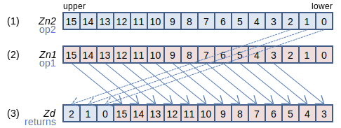
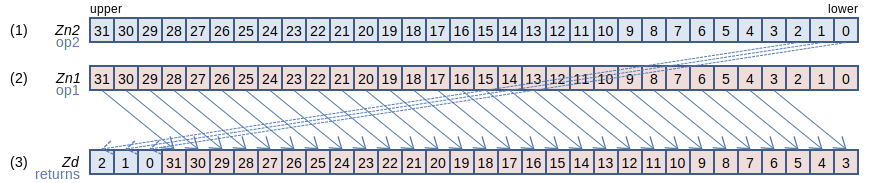
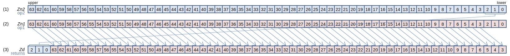
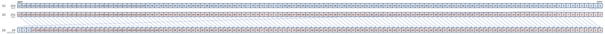
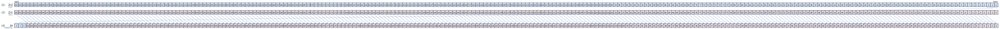

SVE Instruction List by Dougall Johnson
EXT: Extract vector from pair of vectors
EXT Zd.B, { Zn1.B, Zn2.B }, #imm (SVE2 (SME
svint8_t svext[_s8](svint8_t op1, svint8_t op2, uint64_t imm3)
svuint8_t svext[_u8](svuint8_t op1, svuint8_t op2, uint64_t imm3)
128-bit SVE
Fill the imm high bytes of (3) with imm low bytes from (1), then fill the remaining low bytes of (3) with the high bytes from (2). On 128-bit SVE, if imm ≥ 16, it is treated as zero, setting (3) to (2).
256-bit SVE
Fill the imm high bytes of (3) with imm low bytes from (1), then fill the remaining low bytes of (3) with the high bytes from (2). On 256-bit SVE, if imm ≥ 32, it is treated as zero, setting (3) to (2).
512-bit SVE
Fill the imm high bytes of (3) with imm low bytes from (1), then fill the remaining low bytes of (3) with the high bytes from (2). On 512-bit SVE, if imm ≥ 64, it is treated as zero, setting (3) to (2).
Larger sizes
1024-bit SVE
Fill the imm high bytes of (3) with imm low bytes from (1), then fill the remaining low bytes of (3) with the high bytes from (2). On 1024-bit SVE, if imm ≥ 128, it is treated as zero, setting (3) to (2).
2048-bit SVE
Fill the imm high bytes of (3) with imm low bytes from (1), then fill the remaining low bytes of (3) with the high bytes from (2).
Report mistakes or give feedback
Inspired by and based on the x86/x64 SIMD Instruction List by Daytime.